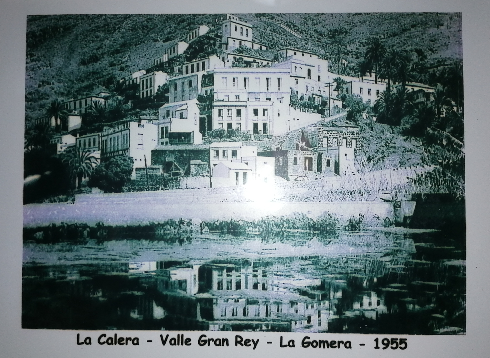
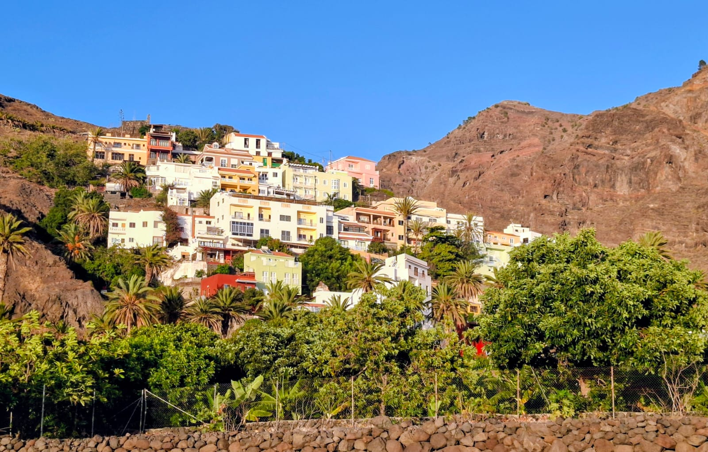

🪴 Cerámica
Nery
Artista ceramista con un estilo natural y sensible.
Ver su obra →La inspiración nace en Valle Gran Rey
La Calera, Valle Gran Rey, La Gomera. Ha cambiado de colores, pero sigue siendo nuestro lugar.


De una casa de La Calera salieron cinco ramas.
Cada uno con lo suyo. Entra en su casita y mira lo que hace.
🪴 Cerámica
Artista ceramista con un estilo natural y sensible.
Ver su obra →🎊 Piñatas y filigranas
Artesana de piñatas, filigranas y bisutería.
Explorar →🪵 Madera
Creador: coches, juguetes de madera, portamóviles.
Explorar →Aquí va la primera anécdota: un verano en el pueblo, una travesura, algo que siempre se cuenta en las reuniones.
Aquí va otra historia. Puede ser corta: una frase que haga reír a todos.
Y aquí otra más. Cuantas más anécdotas, más se parecerá la página a una tarde de familia.
Desliza para ver más. Toca una foto para ampliarla.
Desliza para ver más. Toca una foto para ampliarla.